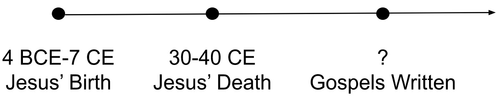
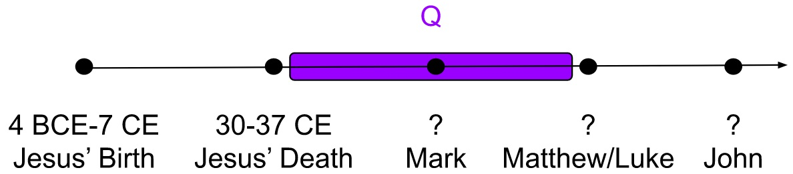

Gospel Authorship
Posted on April 15, 2018
Contents
Motivation and Timeline
What was Jesus like? Before we consult Christian dogma, we can only assume that the Gospels were accounts of Jesus written by people who knew Him or had heard of Him from others. Of the Gospels, only the Gospel of John claims to have been written by someone who knew Jesus.[1] The rest carry no internal claims to authorship.
According to Maier,[2] Jesus died either in 30 or 33 CE. Luke 3:23 states that Jesus was about 30 years old when He began teaching. John mentions three or four Passovers,[3] implying Jesus taught for three and a half years.[4] Thus, Jesus was probably born between 4 BCE and 1 CE. Alternatively, according to Luke 2:2, Jesus was born while Quirinius was governor of Syria in 6–7 CE, which would put Jesus's death circa 39–40 CE.[5] At some point after Jesus' death between 30 and 40 CE, some number of sources were collected into at least four Gospels.
As a general rule, the earlier something was written and the closer the source was to Jesus, the more reliably it should be able to portray events in Jesus' life.
Determining Sources and Order

The Gospels of Matthew, Mark, and Luke are considered the Synoptic Gospels because of the large amount of overlap between them. John "contains 93 percent original material in comparison to the Synoptics."[6]
Mark Came First
A good list of evidence for Marcan priority can be found on Wikipedia. In my opinion, the strongest among them is:
Because the Gospel of Mark is significantly shorter than the other Synoptics, and only 3% of Mark is unique to Mark, if the Gospel of Mark was written after the Gospels of Matthew and Luke, Mark would have most likely been written as a condensed summary Gospel. Thus, the 3% of unique story must have come from a separate source and must have been considered important to have beat out the birth narrative and Lord's Prayer, which are only discussed in the Gospels of Matthew and Luke, not Mark. These exclusively Marcan events are a parable, two healings, and an addition to the story of Jesus' arrest. After Jesus questions why the authorities did not arrest Him in public and the apostles flee, the Gospel of Mark includes: "A young man was following along. All he had on was a bedsheet. Some of the men grabbed him but he got away, running off naked, leaving them holding the sheet."[7] Because it seems unlikely that this story would be more considered important than the birth narrative, I'll accept the alternative that the Gospel of Mark was written first.
However, there also exists a relatively strong external argument for Matthian priority. Eusebius of Caesarea, a fourth century Christian historian, wrote in Ecclesiastical History[8] in the fourth century that an early Christian bishop named Papias of Hierapolis had written in Exposition of the Logia of the Lord (now lost) circa 95–130[9] that he had learned from a church elder named John that the Gospel of Matthew was the first to have been written. So Eusebius heard from Papias heard from John that Matthew wrote his Gospel first. I found these pieces online:
The Elder [John] also said this, "Mark, being the interpreter of Peter, whatsoever he remembered he wrote accurately, but not however in the order that these things were spoken or done by our Lord. For he neither heard the Lord, nor followed him, but afterwards, as I said, he was with Peter, who did not make a complete [or ordered] account of the Lord's logia, but constructed his teachings according to chreiai [concise self-contained teachings]. So Mark did nothing wrong in writing down single matters as he remembered them, for he gave special attention to one thing, of not passing by anything he heard, and not falsifying anything in these matters."
Concerning Matthew these other things were said, "Therefore, Matthew set in order the logia ("divine oracles") in a Hebrew dialect [Aramaic], and each interpreted them, as he was able."
Papias via Eusebius says nothing of the Gospels of Luke or John, but that does not mean that he did not write about them because we no longer have access to Papias' original writings.
Despite Papias' claim that Matthew came first, most scholars seem to agree that the Gospel of Mark preceded the Gospel of Matthew. Why discard Papias? Papias writes of Matthew: (1) he set in order the logia (words, sayings, wisdom) of Jesus (2) in Aramaic and interpreted them. But the Gospel of Matthew as we know it contains much more than just Jesus' sayings. The second part is a little confusing. Does Papias mean that the Gospel of Matthew was written in Aramaic or that Matthew compiled and translated several Aramaic sources into Greek? Papias can't mean the former because the Gospel of Matthew was probably originally written in Greek as evidenced by the lack of "telltale marks of a translation" and the fact that the Gospel of Matthew's Old Testament quotes come from a Greek source, not a Hebrew one.[10] Papias can't mean the latter because the author of the Gospel of Matthew wouldn't have needed to translate from other sources to Greek since they were present at the time. Therefore, it seems like neither of Papias' descriptions of Matthew are factual.
Ibid. puts forth an alternative theory: the Gospel according to Matthew discussed by Papias is different than the one we know today, one that was originally in Aramaic and contained mostly sayings of Jesus. Regardless, Mark was probably the first Gospel written.
Arguments for and against Matthian priority are summarized in Daniel Harrington's The Gospel of Matthew.[11]
John Came Last
Recall that the vast majority of the Gospel of John was unique to the Gospel of John. If the Gospel of John had come prior to the other three, some of the material in the Gospel of John would most likely have been cited by the Synoptics, especially the the resurrection of Lazarus. Given that there exists several discrepancies between the Gospel of John and the Synoptics,[12] it is therefore more likely that the Gospel of John was written after the Synoptics as a more poetic version of the original story adapted for a broader audience and including other oral narratives not available to the Synoptics. In conclusion, the combination of the Gospel of John's unique material not cited by the Synoptics as well as the amount of material not in the Gospel of John but present in the Synoptics makes the case that the Gospel of John was written last as a supplement to the previously existing Gospel stories.[13]
Matthew, Luke, and Q
The Gospel of Luke begins:
Many have undertaken to draw up an account of the things that have been fulfilled among us, just as they were handed down to us by those who from the first were eyewitnesses and servants of the word. With this in mind, since I myself have carefully investigated everything from the beginning, I too decided to write an orderly account for you, most excellent Theophilus, so that you may know the certainty of the things you have been taught.
The Gospel of Luke was always my favorite Gospel because of this opening. The Gospel of Luke reads like a modern historical, or "orderly," account. The author writes that they investigated everything about Jesus' life "from the very beginning" exactly as the eyewitnesses described using the best sources available. As I will discuss later, the author remains anonymous and was probably not an eyewitness, and unfortunately stopped short of citing their sources by name.
The 97% of the Gospel of Mark used in the Gospels of Matthew or Luke accounts for less than half of both later Gospels. More than 40% of the material in the Gospels of Matthew and Luke that did not come from the Gospel of Mark is shared by both Gospels. Firstly, the almost 60% of material in Matthew and Luke neither in Mark nor the other of the two indicates that the Gospels of Matthew and Luke were written independently and, therefore, around the same time. If one had been published significantly before the other was written, the author of the latter would be more likely to know about the former and reference it, especially because some of the information in each contradicts the other.[14] Secondly, the commonality of the remaining material is so stark that it makes sense for there to have been a common source or sources on which both gospels relied. Modern scholars refer to this/these source(s) as "Q,"[15] from the German Quelle, meaning "source."
In my opinion, Q is more likely to be an amalgamation of several sources, oral and/or written. Had there been a single, unified source available, church leaders would likely have discussed it at the time, but there exists no record of such discussions.[16] As Burkett[17] writes:
The Evangelists [the authors of the Gospels of Matthew and Luke] had access not only to written sources, but also to a body of oral tradition. The theory of a common written source best explains those passages where Matthew and Luke have a high degree of verbatim agreement; but where they do not, common dependence on oral tradition may provide a better explanation.
Likely, the authors of the Gospels of Matthew and Luke would have recorded the oral sources as the authors remembered them with little to no verbatim agreement, whereas they would have copied written sources directly from Q with high verbatim agreement.
Q[18] mostly contains the sayings of Jesus, or the logia. MacDonald[19] hypothesizes that Papias' Gospel of Matthew was actually Q. As discussed above, the only surviving piece of Papias' description of that Gospel is, "Matthew set in order the logia in a Hebrew dialect, and each interpreted them, as he was able." Q is mostly made up of logia. Furthermore, as Burkett points out, the fact that Matthew and Luke use identical wording in many places makes it likely that those portions of Q would already be in Greek. Otherwise, the authors of the Gospels of Matthew and Luke would have interpreted Q at least slightly differently. Perhaps the author of a written part of Q whom Papias called Matthew had compiled and translated Jesus' logia into Greek which were then copied by the authors of the Gospels of Matthew and Luke, mentioned by Papias via Eusebius, and then lost as a standalone document because it was already contained in two widely circulated Gospels. This explanation is known as the Q+/Papias hypothesis.[20]
Insofar as it exists, Q is a major source of our knowledge about Jesus. Some scholars even argue that Q predates Mark.[21]
In summary, the Gospel of Mark was probably written first because almost all of it is used in the Gospels of Matthew and Luke, with the remaining pieces seeming not important enough to be added if the Gospel of Mark had instead been written later. Matthew and Luke both cited Mark, but also each contained information which was unique to it (as in, information exclusively in the Gospel of Matthew or exclusively in the Gospel of Luke), implying that they were written at about the same time. The Gospels of Matthew and Luke also contained a significant quantity of shared material not found in Mark, implying that at least one other source, Q, was used. Finally, the uniqueness of the Gospel of John relative to the Synoptics indicates its purpose as a supplement to or a more poetic version of them, and therefore written after them.
Dating the Gospels
Mark
There are two main data used to date the Gospel of Mark:
Recall that the Gospels of Matthew and Luke were both probably written in Greek. Because they both use the same wording when they borrow from the Gospel of Mark and because that wording matches that of the Gospel of Mark, we can therefore say that the Gospel of Mark was also probably written in Greek.[22] Whenever the author uses an Aramaic word or phrase, they translate it for their reader (e.g. Mark 3:17, 5:41, 7:11, 7:34, 14:36, 15:34), implying that the intended audience would not know Aramaic.[23] Further, the author uses several Latinisms, words of Roman origin,[24] and refers to a man potentially living in Rome,[25] indicating the author would have been influenced by their living in Rome. However, this information is only valuable to us if the Gospel of Mark was written by the Mark mentioned in Colossians 4:10 and Philemon 24. If that were the case, then we could use Paul's letters to date when Mark was in Rome, and therefore provide a terminus post quem. However, as I will discuss later, the Gospel of Mark was probably not written by the same Mark.
The second piece of evidence is Mark 13:14, which comes in the midst of Jesus' answer to the question of Peter, James, John, and Andrew asking when the end of the world would come: "'When you see the abomination of desolation standing where it ought not…' (Let the reader understand) '...then those in Judaea, let them flee into the mountains.'" Nowhere else in the Gospel does the author interrupt to make an aside to the reader. The author makes it sound like something happening at the time of their writing is the fulfillment of Jesus' prophecy, and that such a fulfillment is in line with Daniel 9: "The end will come like a flood...At the temple [the ruler] will set up an abomination that causes desolation, until the end that is decreed is poured out on him." Most scholars think this refers to the destruction of the Temple circa 70 CE,[26] an argument that could be further substantiated by Mark 13:2: "by no means will there be a stone left upon a stone that will not be thrown down."
The reference could have alternatively referred to an edict from Caius to erect a statue of himself in the Temple in 39 CE.[27] Crossley[28] adds to this argument by pointing out that Mark did not discuss Jesus' following the Law implies that readers at the time would have taken it for granted, suggesting an earlier date for the Gospel before Jewish Christians stopped following the Law. Because Caius' statue was never actually erected, the more probable answer is that the Gospel of Mark would have been written around 70 CE.
Matthew
If the Gospel of Matthew quoted the Gospel of Mark and the Gospel Mark was written around 70 CE, then the terminus post quem for the Gospel of Matthew is 70 CE. For a terminus ante quem, most scholars use a letter[29] written by Ignatius of Antioch, who died around 107 CE.[30] The letter seems to quote Matthew 3:15: "that all righteousness might be fulfilled by him." Thus, the Gospel of Matthew could not have been written later than circa 107 CE, the date that someone who scholars think quoted the Gospel of Matthew died.[31]
Luke
I have not found a good explanation for the date of the Gospel of Luke.[32] Luke's version of Mark 13 includes more explicit reference to the Roman invasion of Judaea: "But, when you see Jerusalem surrounded by arms and encampments, then know that her desolation has drawn near."[33] This offers further evidence that Luke would have been written after the destruction of the temple in 70 CE, but we already knew that since the Gospel of Luke, like the Gospel of Matthew, must have come after the Gospel of Mark. Since Matthew and Luke were composed independently of one another, they were also probably composed around the same time, between 70 and 107 CE.
John
Assuming the Gospel of John followed the Gospel of Mark, it couldn't have been written prior to 70 CE. The oldest fragment of the Gospel of John, also the oldest fragment of any gospel, is believed to be P52,[34] dating somewhere between 125 CE[35] and the beginning of the third century.[36]
Martyn argues that John 9:22's statement that Jewish leaders would expel Christians from the synagogue references the Council of Jamnia circa 80 CE, thus moving the terminus later by one decade, but his theory has been largely discredited.[37] Barrett[38] argues the range down to 90–140 CE with a best guess of 100 CE. He uses Marcan priority to date the Gospel of John "certainly not earlier than A.D. 80; 90 would perhaps be a safer estimate." Time definitely needed to have passed for the author of the Gospel of John to have read the Gospel of Mark, and probably also the other two gospels, but twenty years seems like an entirely arbitrary choice. He continues, "It is of course very improbable that the papyrus [P52] should be the autograph copy of the gospel, and we may safely push the terminus back as far as AD 140, especially since the papyrus may have been written earlier...than A.D. 150." In my opinion, Barrett's argument is highly speculative.
In conclusion, this is the most precise timeline I have been able to assemble:
None of the Authors of the Gospels Knew Jesus
Mark
The Gospel of Mark is anonymous, but Papias attributed it to Mark, saying that Mark "neither heard the Lord, nor followed him, but afterwards, as I said, he was with [the Apostle] Peter." The Mark about whom Papias is writing is thought to be John Mark, a disciple of Peter who never interacted with Jesus. However, this description is doubted,[39] with most scholars opting for an anonymous, unknown author who also did not claim to be an eyewitness to the events described in the Gospel. In either case, Mark was probably not written by someone who knew Jesus.
Matthew
The Gospel of Matthew is also anonymous, and Papias is the first example of an attribution (see above). Unlike Mark, Matthew of the Gospel of Matthew was a disciple of Jesus. However, recalling the above discussion of Matthian vs. Marcan priority, whether Papias was wrong about Matthew or was talking about a different Gospel altogether to which we no longer have access, the Gospel of Matthew we have today is probably not the one Papias discussed. Therefore, we have no reason to believe the Gospel of Matthew was written by an eyewitness to Jesus.
Luke
The Gospel of Luke is also anonymous. Early church tradition attributes the authorship of this Gospel to Luke the Evangelist,[40] who was not a disciple of Jesus. Scholars dispute this claim, but as with the Gospel of Mark, everyone seems to agree that whoever wrote the Gospel of Luke had never met Jesus.
John
The Gospel of John specifically states the author is the "Disciple that Jesus loved."[41] The first assignment of John as the author comes from Irenaeus, a Bishop of the early church, who wrote in Adversus Haereses, 3.1.1, circa 180, "John, the disciple of the Lord, who also had leaned upon His breast, did himself publish a Gospel during his residence at Ephesus in Asia."[42] Irenaeus heard this information from Polycarp.[43,44,45] But there are a few problems with this. From ibid.: "Other Christian literature...mentions no ministry of the apostle John" near Ephesus. From Burkett: "John the apostle suffered martyrdom prior to the composition of Mark around 70 CE."[46] Even assuming the story of John's early martyrdom is not correct, if John wasn't written until 70 CE at the earliest, John would have been very old at the time. Wikipedia,[47] New World Encyclopedia,[48] and Catholic.org[49] all agree that John was born in 6 CE, implying that he would have been at least 63 years old when he wrote his Gospel, at least 30 years since Jesus' death for details to become blurred. As Barnabas Lindars and John M. Court point out, "it is already clear that the Gospel of John is far too complex to be considered merely an old man's reminiscences."[50]
Stepping back from Irenaeus and church tradition, let's look at the context of the verse that claims authorship, John 21:24, starting from a few verses prior. After Jesus' restoration of Peter, verses 20–25 read:
Turning, Peter sees the disciple whom Jesus loved following behind—he who also had leaned upon his chest at supper and said, "Lord, who is he who betrays you?" So, seeing this one, Peter says to Jesus, "Lord, and of what this one?" Jesus says to him, "If I wish him to remain until I come, what is that to you? Follow me." Thus it is that the claim went forth to the brethren that this disciple is not to die; but Jesus did not say to him that he is not to die, but rather: "If I wish him to remain until I come, what is that to you?"
This is the disciple who testifies concerning these things and who has written these things, and we know that his testimony is true. And there are many other things that Jesus also did, which, were they written down one by one, I think the cosmos itself would not contain the books that would be written.
After a narrative gospel told entirely in the third person and mentioning nothing from after Jesus' ascension (and, for that matter, only mentioning the ascension itself very briefly[51]), why would the author suddenly begin correcting some rumor about Jesus having said something He didn't? And who is "we"? Also, if you're crediting the author, why remain anonymous? As Green, et al. point out:
The suggestion that this veiled allusion is a way of preserving the author's own modesty seems strained. It would be far less presumptuous simply to name oneself than to continually speak of oneself as enjoying the most intimate relationship with Jesus. Others would more naturally bestow such a term of honor.
The answer on which many scholars have rested is that the Beloved Disciple, as Green, et al. puts it, "is a purely ideal, and not historical, figure." The author of the gospel is therefore an anonymous person or collection of people, and the concluding verses (21:20–25) are a kind of appendix written by a "redactor" or "redactors." Note that the "we" could be the "royal we," not specifically implying multiple authors. The appendix corrects some details they believed had been miscommunicated in common lore regarding the sayings of Jesus at the time and concluded poetically with an authorship attribution to a model figure and a cute last line. As Michael J. Kok[52] writes:
Raymond Brown encapsulates the reservations of many scholars about this extrapolation [that John 21:24 was an intentional pseudonymous device]: "It is true that such an attribution may have been added to the Gospel in an attempt to clothe an anonymous work with the mantle of apostolic authority, but an attribution without a personal name does not seem specific enough for that purpose." However...the beloved disciple was the most suitable choice for a fictive author based on his exemplary virtue and perceptiveness within the Fourth Gospel. The real evangelist may not have possessed any clout for Christians outside the small Johannine clique, so the redactor [the author(s) of the appendix] replaced him or her as the author with one of the evangelist's principal informants whose stellar qualifications as the "disciple whom Jesus loved" were on display for any general reader who perused the Fourth Gospel. There was ample Jewish precedent for fictitiously ascribing law codes to Moses, psalms to David, and wisdom books to Solomon. Like them, the beloved disciple was an archetypal figure—the archetype of discipleship—and consequently came to be regarded as the fountainhead of the Johannine tradition.
There exists another explanation for John's authorship misattribution from Green, et al:
The phrase, "who has written these things" (grapsas tauta)...may be rendered "has caused these things to be written," in which case the Beloved Disciple is indirectly responsible for the Gospel...The Gospel presents the Beloved Disciple as the witness on which it is based, but not necessarily its author.
Conclusion
I began this study to figure out what Jesus was actually like. The Bible seems to be the best source of external information on this matter, and of the books of the Bible, only the Gospels and Acts tell of Jesus' life. Five books: Matthew, Mark, Luke, John, and Acts.
Of those five books, only three could have been written by someone who knew Jesus: Matthew, Mark, and John. The author of the Gospel of Luke, also the author of Acts,[53] does not claim to have met Jesus, nor is "Luke" the recorded name of any of Jesus' twelve disciples.
Regarding the Gospel of Mark, church tradition concedes that Mark was not a disciple, but rather John Mark, an interpreter of Peter, someone who also never met Jesus. Moreover, modern theology has pretty good arguments to suggest that the author's relationship to Jesus was even further removed. That leaves the Gospels of Matthew and John.
Nowhere in the Gospel of Matthew is the author named or discussed. The attribution came much later, is less-than-bulletproof, and is probably not a reference to the same gospel. To determine this, we had to investigate Gospel dependency and order, especially exploring the evidence behind Marcan priority, which both explained why the author of the Gospel of Matthew probably was not an eyewitness of Jesus and gave an interesting alternative explanation to the early church's authorship attribution.
The Gospel of John, the last book of the Bible written by someone who could have known Jesus, does have some internal discussion of the author. However, as with the Gospel of Mark, modern theology presents ample arguments that the Beloved Disciple was a fictional character rather than a real one. To determine this, we had to investigate the dates that the Gospels were written. If the Gospel of John could not have been written until John himself was at least 63, the specific details of events that had happened decades prior must have been, at the very least, edited together. If the dating of the Gospel of John allows us to reject the church's authorship assignment of John to the Gospel, then we find that the preponderance of evidence leads us to believe the author was probably not someone who knew Jesus personally.
That leaves us with Q, the collection of sayings that at least could have been recorded by eyewitnesses of Jesus. Two miracles and a few dozen teachings. Q contains many of my favorite parts: blessed are you when they persecute you; love your enemies; treat others the way you want to be treated; do not pass judgment; how do you see the speck in your brother's eye when there is a log in your own; follow Me, and leave the dead to bury their own dead; I send you like sheep in the midst of wolves; woe to the exegetes of the Law; and so on.
It bothers me that, at best, so little of the book on which I center my life is what I was taught it was. Not only is the Christian tradition mediated by the Council of Rome's fourth century decision regarding which books to include in the canonical Bible, but also by the authors of the books themselves, none of whom likely knew the man about whom they wrote. So, in the words of a friend of mine, do I learn to trust and have faith in those who came before me, or reject this tradition and form a new one?
Works Cited
- ^ John 21:24
- ^ Maier, Paul L. "Sejanus, Pilate, and the Date of the Crucifixion." Church History 37.1 (1968): 3-13.
- ^ John 2:13, 5:1, 6:4, 19:14
- ^ Burge, Gary M. (2014). "Gospel of John." In Evans, Craig A. The Routledge Encyclopedia of the Historical Jesus. Routledge. ISBN 978-1-317-72224-3
- ^ Hart, David Bentley. The New Testament: A Translation. Yale University Press, 2017.
- ^ Zuck, Roy B., John F. Walvoord, and Louis A. Barbieri Jr. Bible Knowledge Commentary. David C Cook, 1983.
- ^ Mark 51–52
- ^ Eusebius. Church History (Book III). Translated by Arthur Cushman McGiffert. From Nicene and Post-Nicene Fathers, Second Series, Vol. 1. Edited by Philip Schaff and Henry Wace. (Buffalo, NY: Christian Literature Publishing Co., 1890.) Revised and edited for New Advent by Kevin Knight.
- ^ Yarbrough, Robert W. (Jun 1983). "The Date of Papias: A Reassessment" (PDF). Journal of the Evangelical Theological Society. 26 (2): 181–191
- ^ Bromiley, G.W. International Standard Bible Encyclopedia, Volume III: K-P. Eerdmans Publishing Company, 1979.
- ^ Harrington, D.J. The Gospel of Matthew. Liturgical Press, 1991.
- ^ Wikipedia contributors. "Gospel of John." Wikipedia, The Free Encyclopedia. Wikipedia, The Free Encyclopedia, 15 Apr. 2018. Web. 15 Apr. 2018.
- ^ D. M. Smith, John Among the Synoptics: The Relationship in Twentieth-Century Research Fortress, 1992.
- ^ Luke 2:2 states that Jesus was born during the governorship of Quirinius between 6–7 CE. Matthew 2:1 states that Jesus was born during Herod's kingship, which ended with Herod's death in 4 BCE. This argument was made by Hart.
- ^ Wikipedia contributors. "Q source." Wikipedia, The Free Encyclopedia. Wikipedia, The Free Encyclopedia, 10 Apr. 2018. Web. 15 Apr. 2018.
- ^ Edwards, James R. The Hebrew Gospel and the Development of the Synoptic Tradition. Wm. B. Eerdmans Publishing, 2009.
- ^ Burkett, Delbert Royce. Rethinking the Gospel Sources: The Unity or Plurality of Q. Vol. 2. Society of Biblical Lit, 2009.
- ^ "The Critical Text of Q." The International Q Project, 1996.
- ^ MacDonald, Dennis R. Two Shipwrecked Gospels: the Logoi of Jesus and Papias's Exposition of Logia about the Lord. Vol. 8. Society of Biblical Lit, 2012.
- ^ Wikipedia contributors. "Q+/Papias hypothesis." Wikipedia, The Free Encyclopedia. Wikipedia, The Free Encyclopedia, 25 Mar. 2018. Web. 15 Apr. 2018.
- ^ Dunn, James DG. Jesus Remembered: Christianity in the Making. Vol. 1. Wm. B. Eerdmans Publishing, 2003.
- ^ Burkett, pg. 157
- ^ Burkett, pg. 157
- ^ Slusser, Wayne. "Latinisms in Mark's Gospel." NT Resources, 28 May 2011.
- ^ Rufus, Mark 15:21 and Romans 16:13
- ^ Burkett, pg. 157
- ^ Josephus, Antiquities 18.261.
- ^ Crossley, James G. The Date of Mark's Gospel: Insight from the Law in Earliest Christianity. Vol. 266. A&C Black, 2004.
- ^ Ignatius. "The Epistle of Ignatius to the Smyrnaeans." New Advent.
- ^ Farmer, D. The Oxford Dictionary of Saints, Fifth Edition Revised. OUP Oxford, 2011. There are other sources for the date of Ignatius' death, too, but none of them provide any evidence. This concerns me, but since I'm mostly looking for an earliest possible date, I'm not too bothered.
- ^ Aune, D. E. The Blackwell Companion to The New Testament. Wiley, 2010.
- ^ Charlesworth, P. J. H. The Historical Jesus: An Essential Guide. Abingdon Press, 2008.
- ^ Luke 21:20
- ^ Wikipedia contributors. "Rylands Library Papyrus P52." Wikipedia, The Free Encyclopedia. Wikipedia, The Free Encyclopedia, 22 Mar. 2018. Web. 15 Apr. 2018.
- ^ Orsini, Pasquale, and Willy Clarysse. "Early New Testament Manuscripts and Their Dates." Ephemerides Theologicae Lovanienses 88.4 (2012): 443-474.
- ^ Nongbri, Brent. "The Use and Abuse of P52: Papyrological Pitfalls in the Dating of the Fourth Gospel." Harvard Theological Review 98.1 (2005): 23-48.
- ^ Klink, Edward W. "Expulsion from the Synagogue." Rethinking a Johannine (2008).
- ^ Barrett, Charles Kingsley. The Gospel According to St. John: An Introduction with Commentary and Notes on the Greek Text. Westminster John Knox Press, 1978.
- ^ Reddish, Mitchell Glenn. An Introduction to the Gospels. Abingdon Press, 1997.
- ^ Irenaeus. Against Heresies (Book III, Chapter 1). New Advent.
- ^ John 21:24
- ^ Ibid. [40]
- ^ Eusebius of Caesarea, Ecclesiastical History Book V. Chapter V. Library of Wellesley College.
- ^ Trebilco, P. The Early Christians in Ephesus from Paul to Ignatius. Eerdmans Publishing Company, 2007.
- ^ Green, J. B., et al. Dictionary of Jesus and the Gospels. InterVarsity Press, 2013.
- ^ Burkett, D. An Introduction to the New Testament and the Origins of Christianity. Cambridge University Press, 2002.
- ^ Wikipedia contributors. "John the Apostle." Wikipedia, The Free Encyclopedia. Wikipedia, The Free Encyclopedia, 15 Apr. 2018. Web. 15 Apr. 2018.
- ^ "John the Apostle." New World Encyclopedia. 15 Apr. 2018.
- ^ "St. John the Apostle." Catholic Online.
- ^ Culpepper, R. A., et al. Johannine Literature: With an Introduction by R.A. Culpepper. Bloomsbury Academic, 2000.
- ^ 3:13, 6:62, 20:17
- ^ Kok, M. J. The Beloved Apostle?: The Transformation of the Apostle John into the Fourth Evangelist. Cascade Books, 2017.
- ^ According to church tradition. Regardless of the truth of this, the author of Acts probably did not know Jesus.
Appendix: Comments from Friends
Below are selected comments from my friends who helped me edit this document. Most comments were incorporated directly into the text as edits and further explanations. I felt these stood well on their own.
Many Christians (esp. Catholics) already understand our faith is not simply based on Scripture, but also on the tradition of the faith (e.g. the oral tradition that forms the backbone of these Gospels, regardless of individual authorship). In all of this, I find an opportunity to smash the idols of the Bible and scriptural literalism, and to reclaim the "fuzziness" and communal spirit inherent to these texts.
https://cac.org/second-naivete-2016-10-02/
The Bible is a set of narratives that portray God, developing over time in response to societal conditions. Is God someone who wanders in a garden? Someone who wrestles physically and bodily with someone? A burning bush? A pillar of fire? A mystery dwelling in a temple that can only be heard in Zion? A mysterious force that emanates through the entire world? Incarnate in God's own son? A spirit that appears at Pentecost and dwells within people? Or, is God, in a post-biblical context, a Trinity of beings that exist in relationship? — Mike McHargue
Why were [the Gospels] written? Initially there wasn't any need for a written record and none was made. All the disciples fully expected Jesus to return in the near future. It wasn't necessary to write anything down. And interestingly, there wasn't a lot of curiosity in those early days to the life and teachings of Jesus of Nazareth. The Christian movement was already spreading quickly at that time without any new scriptures. And Paul in all of his letters makes very few references to any of Jesus' teachings. Everything was happening through the agency of the Holy Spirit, and everything was centered on the crucifixion and resurrection. That was the center of Paul's gospel. And that's why the later gospels were written: to give context to the story of the crucifixion. That's the major part of all four gospels. They also each include resurrection accounts, each of which is different. To me this means that the resurrection was a highly personal and life-changing event, and the details of the experience just aren't that important.
For me the crux of the whole search for certainty in matters of faith can be summed up in Paul's words to the Corinthians: "For Jews demand signs and Greeks seek wisdom, but we preach Christ crucified, a stumbling block to the Jews and folly to the Gentiles." The cross is the most powerful symbol the world has ever known and it's cloaked in mystery. We can't discover its meaning by scientific inquiry or scriptural dissection.